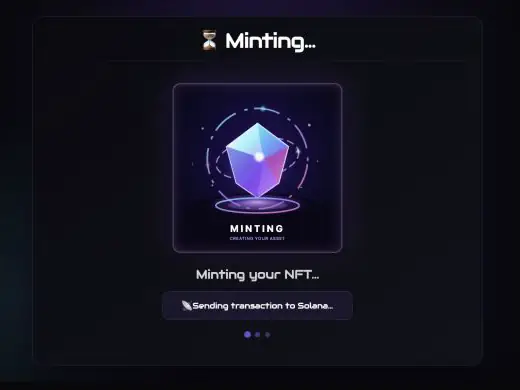
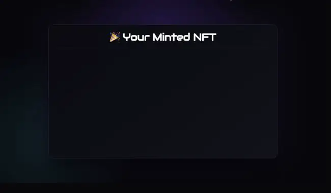

Candy Guard support
Guard groups, allowlists, payments, dates, mint limits, token gates, NFT gates, Core asset gates, burns, and payments.
A configurable, production-oriented Next.js mint website for Metaplex Core Candy Machine, with guarded mint flows, multi-mint, RPC proxying, and optional server-side authorization.
Guard groups, allowlists, payments, dates, mint limits, token gates, NFT gates, Core asset gates, burns, and payments.
Same-origin RPC proxy, method filtering, rate limits, configuration checks, signer health, transaction policy, and simulation.
Environment-driven branding, wallet connection, multi-mint, recent mints, animated progress, reveal modal, and responsive layouts.
The real interface keeps buyers informed from transaction submission through the final Core asset reveal.


git clone https://github.com/tschifra/metaplex-core-mint-ui.git
cd metaplex-core-mint-ui
npm ci
cp .env.example .env.local
npm run devCreate and load your Metaplex Core Candy Machine and Candy Guard first. Then configure the public Candy Machine address and a private DAS-enabled RPC endpoint.
It is a community-maintained customer-facing mint website for collections distributed through Metaplex Core Candy Machine on Solana.
Yes. The repository documents Vercel deployment, environment variables, private RPC configuration, and the optional server-side signer.
No. Use official Metaplex tools to create the collection, Core Candy Machine, Candy Guard, and config lines before connecting the UI.
No. It is an independent community project and an acknowledged fork of Mark Sackerberg's original unofficial Core Candy Machine UI.